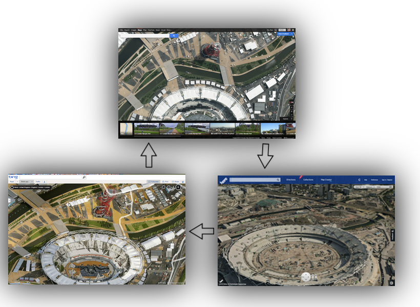

Switch between Google Streetview, Bing Birds Eye + Nokia Here 3D with one click.
Google, Bing and Nokia each have different databases of aerial, satellite and street imagery. This bookmarklet makes it easy to switch between each, while maintaining your geo-location.
Drag this link: H⫷ to your bookmarks bar... Click it when you are on Google Maps, Bing Maps or here.com.
